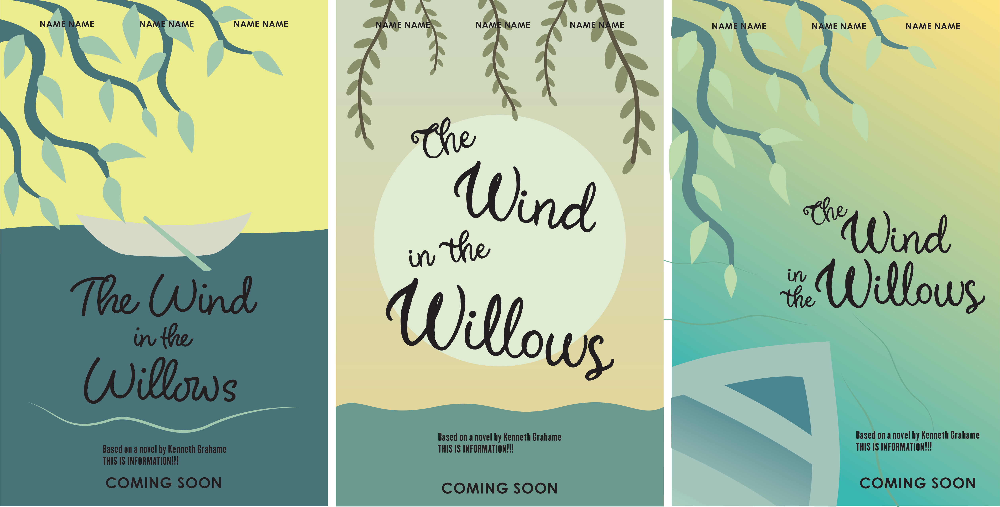
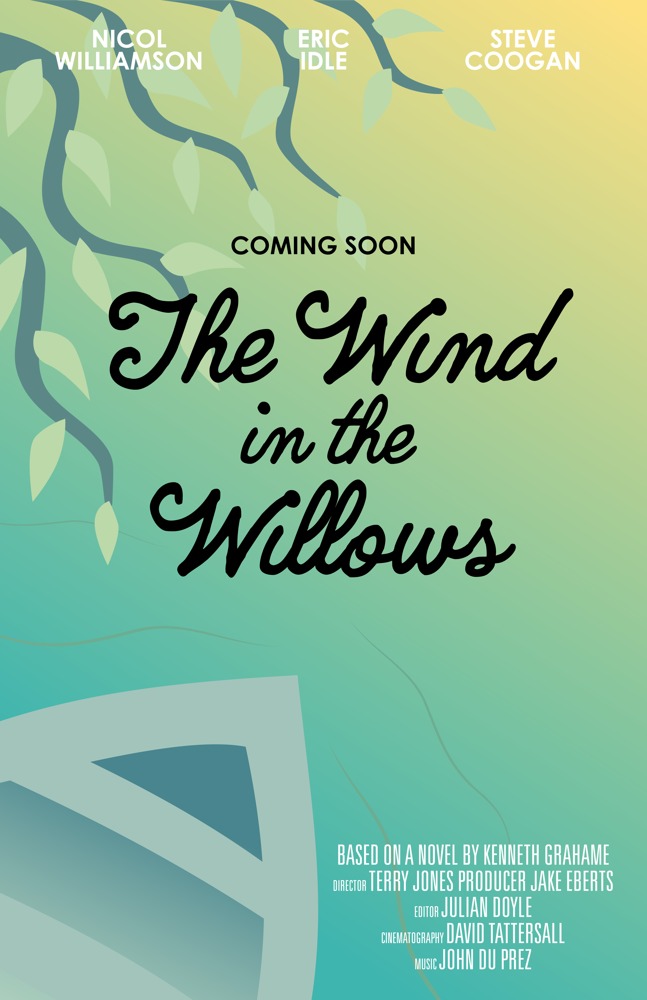
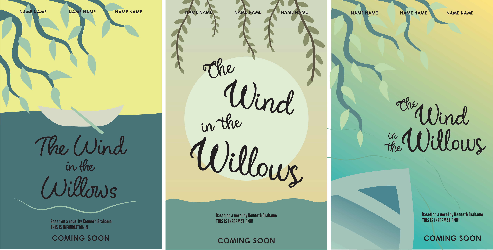
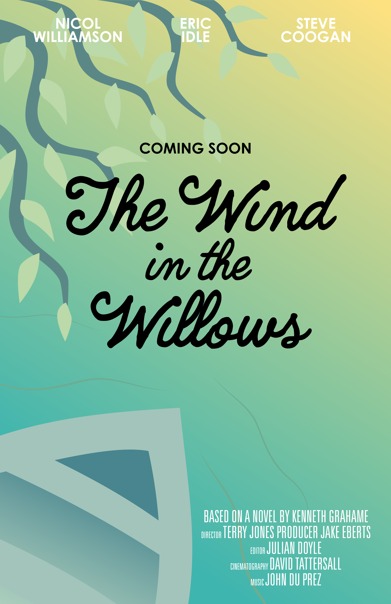
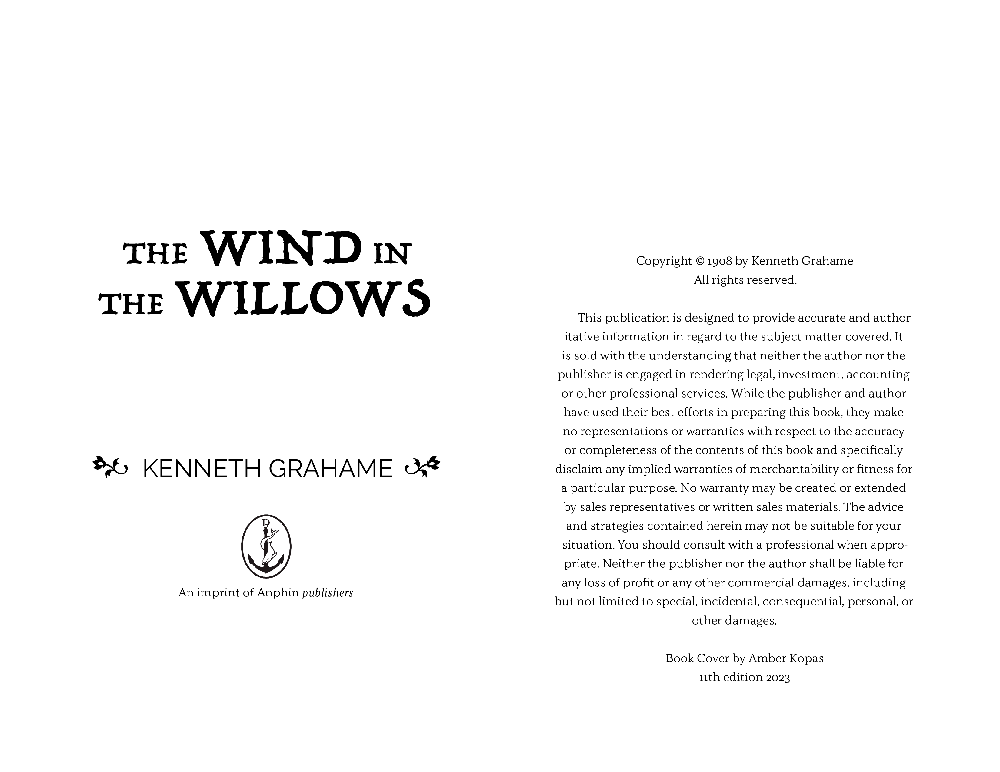
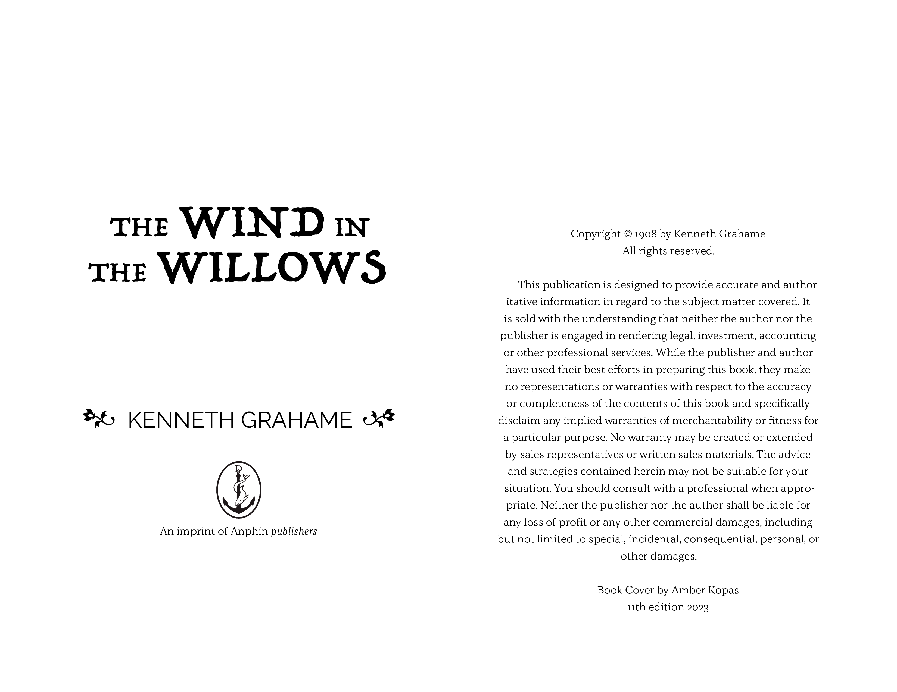
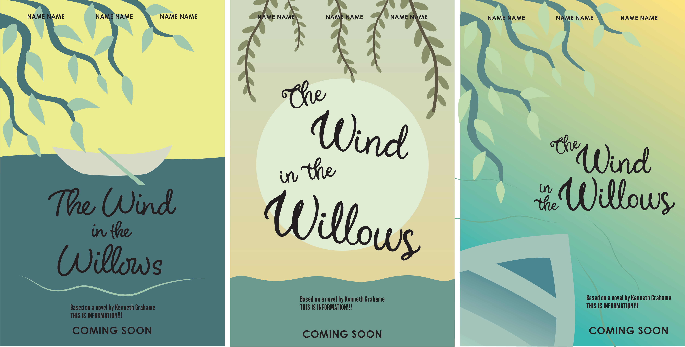
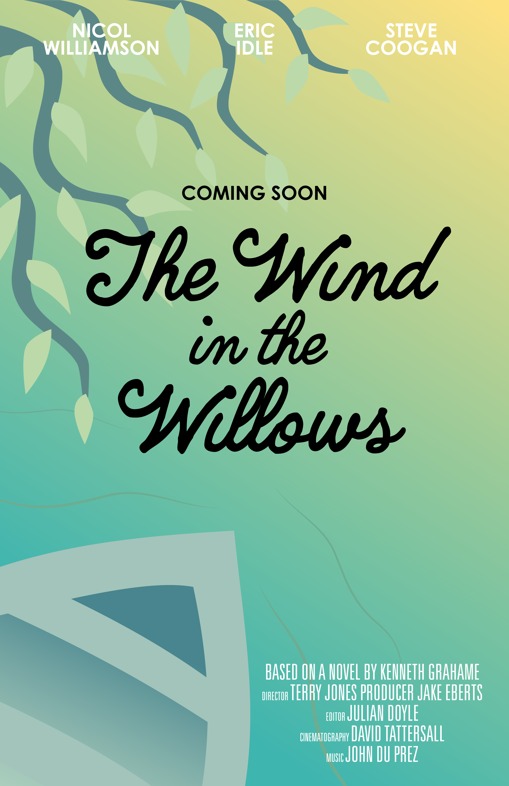
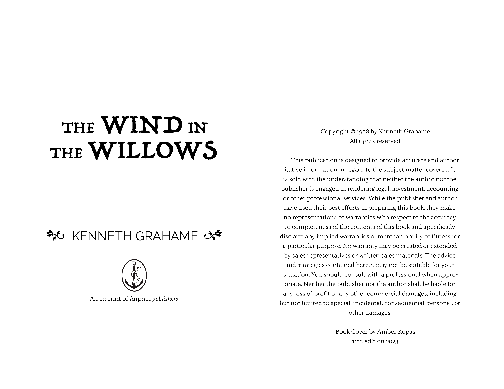

Gallery


 



 


The goal of this project was to re-design a public domain book, with our own take and art direction. The problem being solved was modernizing an old book to cater to new audiences with better developed design. The strategy used was first researching the book “Wind in the Willows” By Kenneth Grahame from 1908, and relative genres and similar. I then explored different typeface combinations for the title and body copy. I Then created a moodboard that encapsulates the direction I want to head, including the chose typefaces. The next important step was sketching different ideas and multiple possible scenes for the poster & cover. Finally of course, the designing phase and finishing touches.
The take away from this assignment was how to properly build and design a book, keeping in mind the target audience of children. I had different experiences between both the cover where I had a lot of lee-way and creativity, and the inside whereas I had more bounds to work within and how I learned to adjust the type structure to fix H&J violations.


